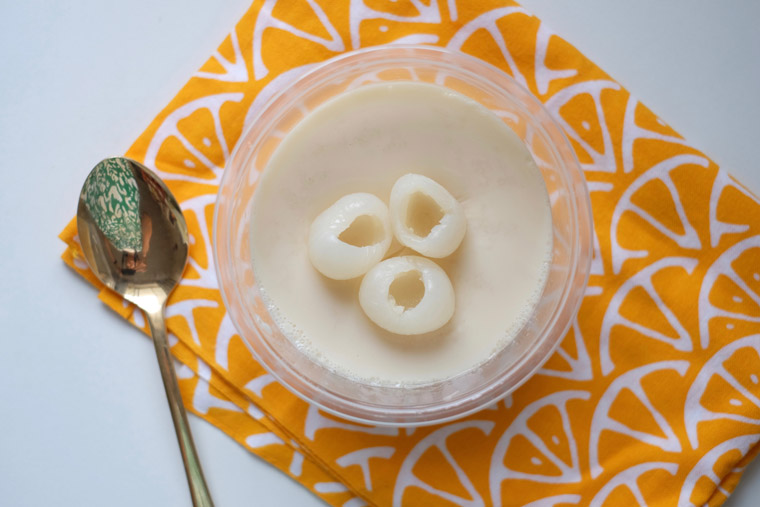

Simple Malaysian Soya Milk Pudding

New Malaysian Kitchen's dessert for light fares and easy digestion. It is a simple soya milk pudding that takes about 30 minutes to make! It is fully plant based and definitely halal. Make sure to gather your friends as well to enjoy this asian dish!
Ingredients needed!
- 1 L of Soya Milk
- 3 cups Water
- 3/4 cup Evaporated Milk
- 1 can Longan Fruit (Optional)
- 1 packet Agar-agar powder
- 3 Pandan Leaves, bruised and knotted
Steps!
-
Syrup!
- Rinse pandan leaves and tie pandan leaves into a knot (to extract the most fragrance, tear the leaves a little).
- Pour longan syrup into bowl.
- Measure out 3/4 cup of evaporated milk.
-
Combine Soya Milk & Pandan
- Add 3 cups of water and pandan leaves into a pot.
- Cover with lid and bring to a boil (10 minutes).
- Remove pandan leaves!
- Pour most of the soya milk into the pot, with a little left on the side.
- Mix in Agar-agar powder with the remaining soya milk. (Make sure to mix well!)
- Pour into pot with the rest of the soya milk.
- Bring to boil (without lid!) while whisking occasionally and then turn off heat.
- Let sit for 10 minutes.
-
Portioning!
- Pour in your syrup mixture to the warm soya milk and mix well.
- Portion your mixture into preferred containers with a ladle.
- For a smoother surface and aesthetic, skim off bubbles from top!
- Let it set for 2 hours!
- Once set, chill in fridge.
- When serving, place optional longan fruit on pudding!